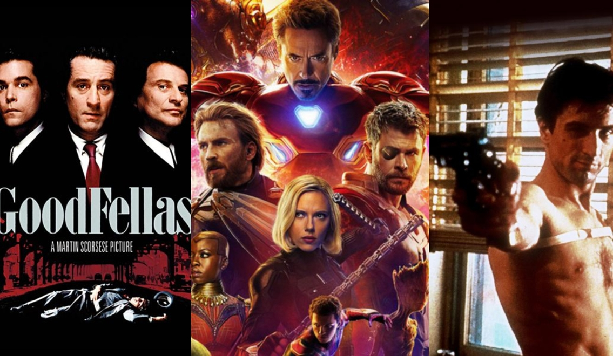
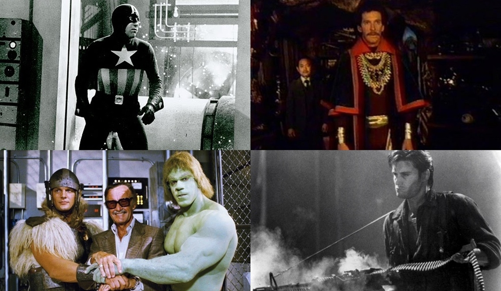
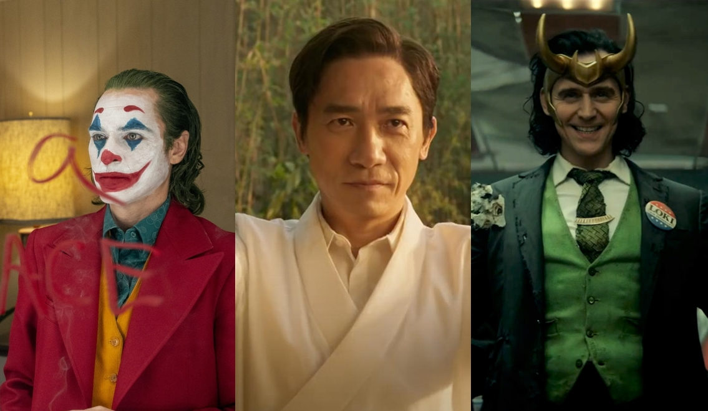
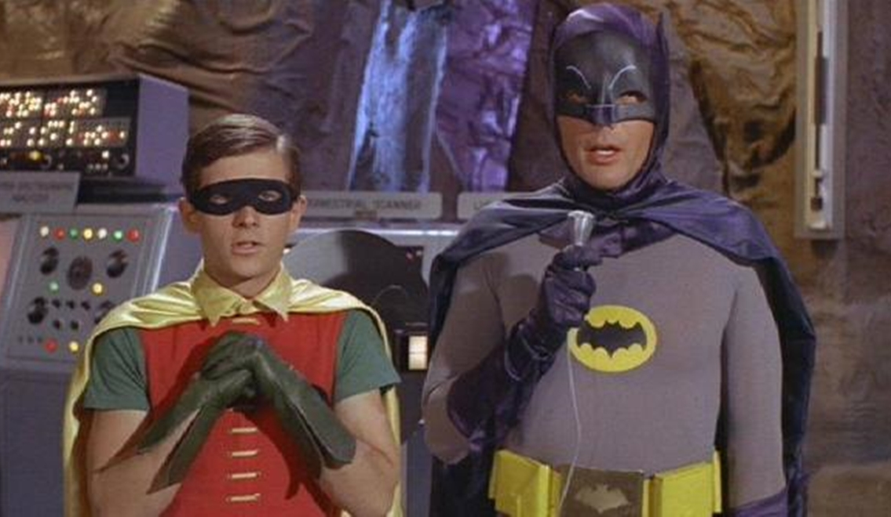

Ký Sự Điện Ảnh - Kỳ 19: Phim Siêu Anh Hùng Không Phải Là Điện Ảnh?
Các tác phẩm của Marvel trông giống như kiểu công viên giải trí chứ không giống phim, tức là chưa thể gọi bằng điện ảnh đúng nghĩa.
Còn nhớ lời nhận định bị "cắt xén" trên của cụ Martin Scorsese từng gây náo loạn một thời, dẫn đến biết bao tranh cãi nảy lửa. Tất nhiên đây thật sự là một cuộc chiến không hồi kết. Những ai là tín đồ của bộ môn nghệ thuật thứ bảy, trưởng thành và tiếp cận với Alfred Hitchcock, Jean-Luc Godard, hay là David Lynch để rồi sùng bái họ, thì hiển nhiên dù ít dù nhiều cũng sẽ có định kiến với các thể loại phim siêu anh hùng, đánh nhau mãn nhãn đi kèm kỹ xảo hoành tráng nhưng kịch bạn lại một màu.
Tuy nhiên, với những khán giả yêu thích dòng phim chuyển thể từ truyện tranh của Marvel hoặc DC, hay những người trung lập thì họ vẫn sẽ có câu trả lời rằng : Phim Marvel vẫn hoàn toàn xứng đáng được gọi là điện ảnh chứ nhỉ. Đừng xem thường chúng!
Mâu thuẫn giữa vấn đề khái niệm điện ảnh khi so sánh các tác phẩm độc lập thuộc bất kỳ chủ đề, với chuỗi phim siêu anh hùng nhiều phần đã xuất hiện từ lâu.

Với nhiều người, kể cả Martin Scorsese, điện ảnh là một trải nghiệm mang tính cá nhân. Cá nhân bởi gu của mỗi người xem và cá nhân với từng bản sắc khác biệt của nhà làm phim. Thời đại của những thế hệ trước, rạp chiếu phim giống như mở ra cánh cổng bước vào thế giới khác. Từ việc trầm trồ bởi cách kể chuyện độc đáo, hay là những màn trình diễn ngoại hạng của diễn viên, cho đến những thước phim táo bạo, đánh vào chủ đề trần trụi, chân thực hoặc có đôi khi lại áp dụng chủ nghĩa hiện sinh, chủ nghĩa siêu thực… Tất cả những điều này sẽ góp phần gây phân cực cho bộ phận đại chúng.
Những ai xem việc coi phim là giải trí đơn thuần, thích thú xem những câu chuyện dễ hiểu hoặc không quá “hack não” thì gần như sẽ khó ngấm được dòng phim hàn lâm, mang nặng tính nghệ sĩ của đạo diễn. Ngược lại, cũng có những người chỉ đam mê thứ phim nghệ thuật kiêu kỳ, cần xem đi xem lại nhiều lần để tìm tòi, khám phá ra ý đồ trong thông điệp mà phim truyền tải. Những kẻ này vẫn có lúc chọn phim “dễ hiểu” để coi, như là sự “đổi gió” mới lạ, nhưng tuyệt đối họ không cho rằng những phim thương mại kia xứng đáng gọi là tuyệt tác điện ảnh.
Từ suốt gần 2 thập niên trở lại, sự bùng nổ của khoa học kỹ thuật và công nghệ thông tin đã làm thay đổi nhiều mặt của thế giới. Giờ đây không còn những chiếc điện thoại chỉ có chức năng nghe gọi, smart phone thế hệ mới thậm chí có thể đóng vai trò như một chiếc máy quay cầm tay bán chuyên, một thao tác nhỏ thì có thể cùng lúc kết nối trò chuyện qua video với hàng chục người. Muốn xem phim hay thì không nhất thiết phải tới rạp chiếu, bởi vì nhiều nền tảng trực tuyến ra đời, giúp cho mọi người có sự lựa chọn tại gia dễ dàng hơn, nhanh chóng chọn phim yêu thích, tiện lợi khi có thể dừng lại mỗi khi bận việc và xem tiếp khi đã sẵn sàng.
Chính bởi những bước nhảy vọt tiến bộ ấy, cả tư duy lẫn ý chí và thói quen sinh hoạt của loài người cũng thay đổi khác trước rất nhiều. Guồng sống hối hả, hàng tá việc bận rộn thì cũng đồng nghĩa với việc thời gian thư giãn bị rút ngắn đi. Liệu có nên dùng quỹ thời gian quý giá ấy đi “nặng đầu” với những tựa phim “khó xơi”. Cách hợp lý nhất vẫn là sử dụng điện ảnh đúng với vai trò thứ hai của nó: GIẢI TRÍ.
May mắn thay, đối với ngành công nghiệp điện ảnh, thừa hưởng sự đi lên của khoa học nên giờ đây những dự án phim tưởng chừng bất khả thi vì không thể thực hiện trong điều kiện khó khăn, thì hiện tại đều có thể xử lý hết bằng CGI.
Kỹ xảo điện ảnh đã đạt được mức độ hoàn thiện đáng kinh ngạc. Thừa sức tạo ra cả một hành tinh giả lập, một thế giới nhiệm màu với nhiều nền văn minh khác biệt, và bao gồm cả những con người “siêu việt”.
Các nhân vật siêu anh hùng được ra đời từ truyện tranh từ rất lâu. Nhiều lần được dựng thành phim điện ảnh và các series truyền hình. Thời kỳ đầu, các bộ phim này chủ yếu dành cho trẻ con xem, vì vậy từ hành động và cả cốt truyện đều xây dựng có phần ngây ngô, hài hước, chen vào đấy là kết cục ai cũng đoán trước được: cái thiện chiến thắng, chính nghĩa trường tồn. Ở khía cạnh sâu xa hơn, mỗi nhân vật hoặc sự kiện xảy ra trong truyện cũng mang hàm ý phản ánh yếu tố chính trị - xã hội của nước Mỹ thực tại.

Có thể thấy phim siêu anh hùng giai đoạn đầu có nét tương đồng với những phim siêu nhân Nhật Bản thường thấy. Vì yếu tố này, nên suốt nhiều năm thể loại này không được đánh giá cao.
Đầu thập niên 2000, nhờ sự hỗ trợ tối đa bởi công nghệ, thể loại này hồi sinh và tạo được tiếng vang đáng kể. Kể từ sau hình tượng Superman kinh điển của Christopher Reeve vào cuối những năm 70, hay là Batman kinh điển của Tim Burton, thế giới lại được thỏa thích quay về tuổi thơ khi chứng kiến Người Nhện giăng tơ khắp các tòa nhà chọc trời của New York. Được nhìn thấy một tay tỷ phú chơi ngông với rất nhiều “đồ chơi” công nghệ tân tiến nhất. Những cái tên quen thuộc đã hồi sinh như Hulk, Captain America, Doctor Strange… Rất nhiều tay phản diện có “máu mặt” cũng được tái hiện lại vô cùng sống động. Cần phải nhấn mạnh rằng số lượng nhân vật phản diện ngày càng được yêu thích tăng dần theo thời gian.
Rồi ai cũng sẽ đóng phim Marvel mà thôi. Câu nói này có thể hiểu theo nhiều nghĩa, cả tích cực lẫn tiêu cực. Thử hỏi việc một ngôi sao nào đấy, góp mặt trong một xuất phẩm mang tầm bom tấn đúng nghĩa, lại còn là thứ bom tấn quy tụ nhiều minh tinh. Điều này thỏa mãn cả người mê phim và đem lại nhiều lợi ích cho phía nhà sản xuất, mọi thứ hoàn hảo từ khâu tiền kỳ - hậu kỳ, quảng bá, doanh thu…, ai mà không thích thú. Tuy nhiên, chỉ lặp lại bản thân qua một vai diễn rất nhiều lần, không có dịp trau dồi diễn xuất, sự sáng tạo trong kịch bản cũng khá ít khi chỉ dựa trên nguồn truyện tranh gốc sẵn có, ngày càng có quá nhiều phim siêu anh hùng sẽ dẫn đến lối mòn khiến cho chúng trở nên dễ đoán và nhàm…, rõ ràng đây cũng là vấn đề không nhỏ.

Công bằng mà nói, khi ai đó chê bai rằng phim siêu anh hùng chẳng có giá trị, không có nét độc đáo trong ý tưởng, diễn viên chỉ diễn với phông xanh, biểu cảm đơn giản và không có nhiều cơ hội bộc lộ chiều sâu tâm lý…, tất cả rồi cũng chỉ là phim dành cho khán giả trẻ hoặc con nít. Nhận định này có phần hơi chủ quan gay gắt.
Diễn với phông xanh, với các đạo cụ được dàn dựng nhưng vẫn phải thể hiện được đầy đủ cảm xúc, phải như thể đang đối đầu với hiểm nguy hoặc mất mát đau thương…, việc này không hề đơn giản. Tất cả vấn nạn của xã hội loài người, trắng – đen hoặc là vùng màu xám đều hiện diện trong các tầng ý nghĩa của phim siêu anh hùng. So sánh với số lượng phim được chuyển thể và độ dài của truyện tranh thì lẽ dĩ nhiên phần nào tâm lý nhân vật khó đạt được sự chuyển biến hoàn hảo. Thế nhưng điện ảnh vẫn có lối đi riêng của nó, mọi mắc xích của từng bộ phim đều được lên kế hoạch trước nhiều năm, liên kết các phần phim tách biệt lại vẫn có thể đồng nhất tất cả chi tiết, chỉ riêng điều này đã cho thấy sự thú vị trong kịch bản và “chất xám” đáng kể của đội ngũ làm phim. Mọi sự nỗ lực đến giờ phút này đều được đền đáp, đã có những đề cử và cả chiến thắng tại các lễ trao giải danh giá, nơi mà các phim siêu anh hùng được xướng tên đầy tự hào.
Các vũ trụ điện ảnh siêu anh hùng giờ đây không còn là những thước phim chiến đấu giữa thiện và ác. Đấy còn là một LÝ TƯỞNG, cài cắm trong đấy về quan điểm nhân sinh của từng nhân vật, họ thay đổi sau từng mất mát và trưởng thành sau nhiều nỗi đau, để rồi đi đến điểm cuối là họ đều trở nên vĩ đại, truyền cảm hứng theo từng cách khác nhau cho người xem. Chính sự “gần gũi”, số phận mang tính rất “đời” đã giúp những chiến binh tạo nên sự đồng cảm với những người ngồi trước màn ảnh. Họ cũng là người thường, có biết bao nỗi niềm trăn trở trong cuộc sống hằng ngày, lại phải gánh vác trách nhiệm cực kỳ lớn bởi chính thứ năng lực đặc biệt mà họ đang sở hữu. Khi quyền lực càng lớn, sứ mệnh càng to hơn.
Dẫu vậy, chuỗi phim thương hiệu kéo dài như các vũ trụ điện ảnh siêu anh hùng vẫn tồn tại điểm yếu. Như cách mà Martin Scorsese hoặc những môn đồ của nghệ thuật điện ảnh đã từng chia sẻ, họ hiểu rằng đây là thời đại của dòng phim này, những nhà làm phim ai cũng muốn làm các bộ phim giống như vậy, đấy là xu hướng đang diễn ra. Thế nhưng định nghĩa điện ảnh của họ, hay cái gọi là gu cá nhân thì mang tầm vóc định nghĩa khác.
Điện ảnh phải có những khung hình đỉnh cao, là vận dụng sự hiểu biết về các loại máy quay để cho ra đời những cảnh phim đáng nhớ. Là khi vị đạo diễn nào đấy dùng cái tôi của mình để cho ra mắt những tựa phim thách thức cả đức tin, đặt ra dấu hỏi về chuẩn mực đạo đức hoặc chơi đùa với tâm trí của khán giả. Điện ảnh còn là chất nghệ thuật bởi việc sắp đặt các cảnh quay, phô diễn kỹ thuật dựng phim – biên tập của nhà làm phim, bên cạnh đó là những màn nhập vai đầy kinh hoàng của diễn viên, những người có khả năng hóa thân và làm mới bản thân qua nhiều vai diễn khác nhau.
Yếu tố nghệ thuật và thương mại hoàn toàn có thể cân bằng. Đã có rất nhiều tác phẩm vừa đậm tính nhân văn, nhưng vẫn đảm bảo đủ giải trí để ai cũng có thể thưởng thức. Trước làn sóng bão hòa của thể loại phim siêu anh hùng, các hãng phim cũng có sự điều chỉnh phù hợp. Dần dần áp dụng nhiều sự đổi mới, nâng cấp phim siêu anh hùng lên tầm vóc lớn hơn. Mọi thứ đang bước sang chương mới, câu trả lời về số phận của các phim thuộc vũ trụ điện ảnh siêu anh hùng vẫn là một điều chưa ai dám khẳng định chắc chắn.

Thôi thì hãy cứ tới rạp, chọn ghế, nhâm nhi bắp nước, tận hưởng và đắm chìm với cảm giác Phim Như Sống – Sống Như Phim. Bởi vì dù sao đi nữa, rạp phim vẫn là Thánh Đường Điện Ảnh đem lại cảm giác đặc biệt hơn bất cứ đâu.